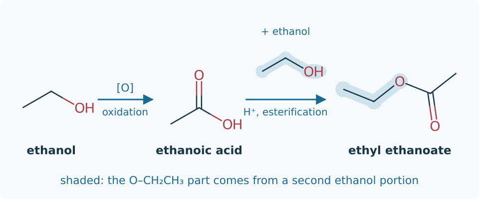
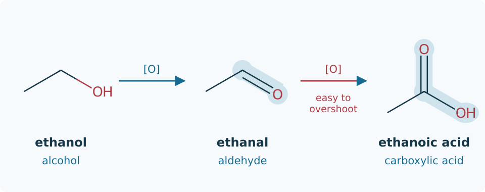
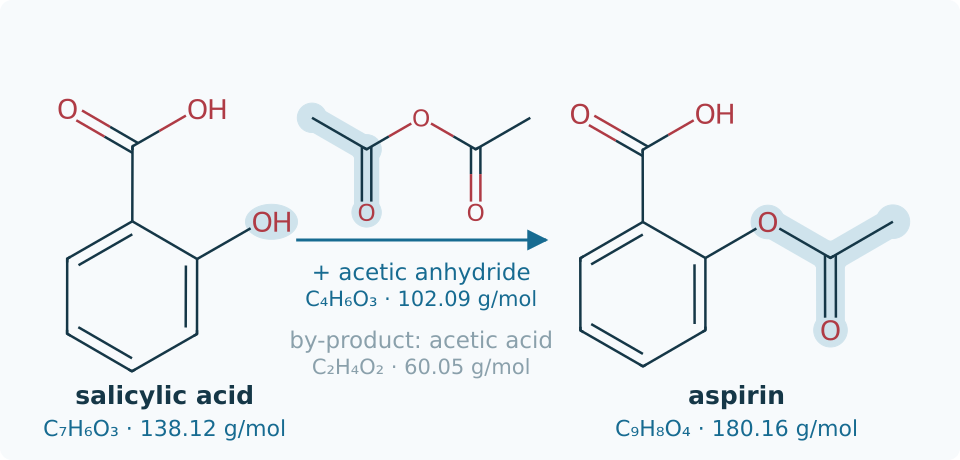
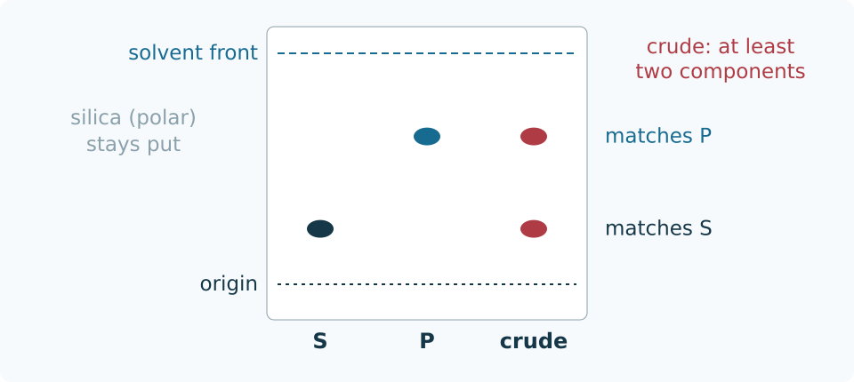
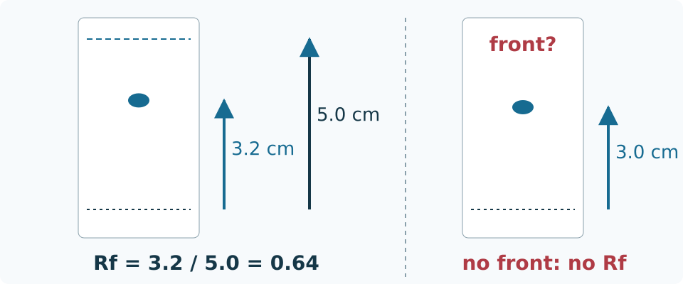
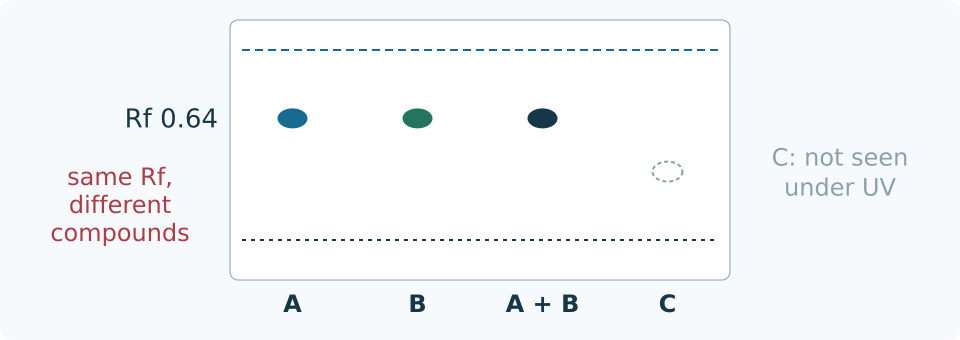
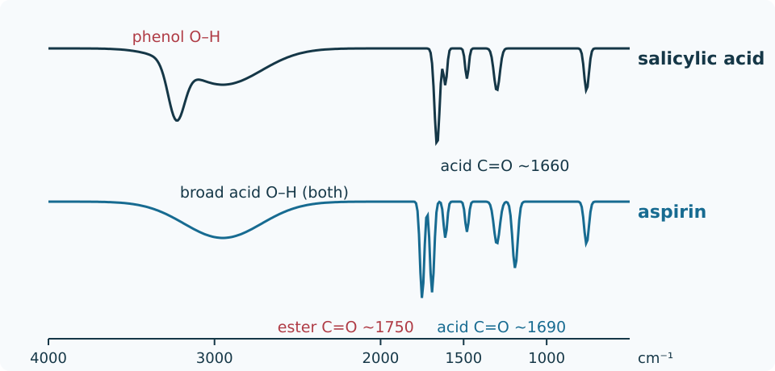
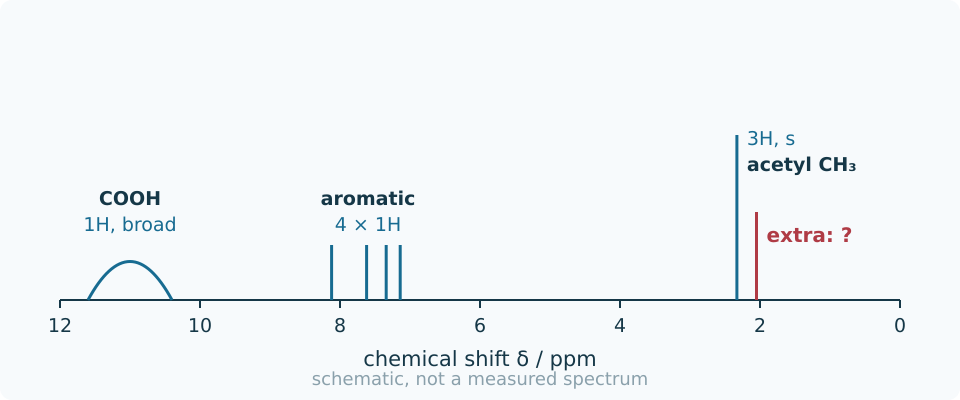

Week 5 · Day 22 — did we make it, how much, and how pure?
Organic Chemistry 1
About this lecture
Acetylsalicylic acid was first made in 1853, as a crude product that nobody could sell. In 1897 chemists at Bayer made it clean and reproducibly, and two years later it went on sale as aspirin. Same reaction; the difference was evidence of identity and purity.
In the practical you’ll make aspirin yourself. Today we learn to answer three separate questions about the white solid on your filter paper:
Planning: a route is a sequence of functional-group changes
Amounts: moles, the limiting reagent, and coefficients
Yield: the theoretical maximum versus what you weighed
TLC: what Rf measures, and what one spot can’t prove
Spectra: IR and NMR as checks on identity and purity
Yesterday you read structures from spectra; today those spectra become evidence about a reaction you ran.
Plan a route by functional-group changes

Ethanol to ethanoic acid to ethyl ethanoate
Work backwards from the target: an ester comes from an acid plus an alcohol, and the acid comes from oxidising an alcohol (Day 13). Each arrow changes one functional group.
Try it: where does the O–CH₂CH₃ part of ethyl ethanoate come from?
From a second portion of ethanol. The first portion is oxidised to the acid; a fresh portion supplies the alkoxy group in the acid-catalysed esterification.
Choose where the oxidation stops

Ethanol to ethanal to ethanoic acid
A primary alcohol oxidises to an aldehyde and then on to an acid. If ethanal is the target, a bare “[O]” isn’t enough: the conditions must stop at the aldehyde and let you isolate it.
Stopping early doesn’t prove you have pure ethanal either. You still need evidence that it’s there and that the acid isn’t.
The aspirin reaction: one oxygen changes

Salicylic acid plus acetic anhydride gives aspirin
The phenol O–H becomes an ester; the carboxylic acid is untouched, so aspirin is an acid and an ester. All coefficients are 1: 138.12 + 102.09 = 180.16 + 60.05.
It’s an acyl substitution (Day 17): the phenol oxygen attacks one C=O of the anhydride, and acetate leaves as acetic acid.
Try it: you recover 1.10 g instead. What’s the yield, and what else changes?
61.1 %. Only the numerator changed; the theoretical mass stays 1.8016 g.
Yield is not purity
isolate
mass
apparent yield
spectra
A
1.10 g
61.1 %
consistent with aspirin, no extra signals
B
1.95 g
108.2 %
major extra NMR signals
Yield measures how much you weighed. It says nothing about what you weighed. Sample A is probably the better product.
Try it: give two kinds of explanation for B’s yield above 100 %.
Extra mass that isn’t product (residual solvent or water, leftover reagents, by-product) or an error (weighing, molar mass, stoichiometry). Not extra aspirin.
TLC separates before you judge

TLC plate with starting material, product reference and crude lanes
Compounds that stick more strongly to the polar silica travel less. The crude lane shows at least two detected components, matching the references. Spot darkness isn’t a measure of amount.
Rf: two distances from the same origin

Measuring Rf, and a plate without a marked front
Rf = distance to spot centre ÷ distance to solvent front, both from the origin. Mark the front as soon as the plate comes out: without it there’s no denominator, and you can’t invent one.
Try it: the starting-material spot is 1.2 cm up, front 5.0 cm. What’s its Rf, with units?
0.24, no units. Centimetres cancel. The value only holds for that plate, eluent and conditions.
One spot can hide a mixture

Co-migrating compounds and an undetected component
Different compounds can co-migrate at the same Rf, and some components are invisible under UV or the chosen stain. One spot means one detected component under these conditions, not proof of purity.
Try it: your product shows a single spot. What evidence would test whether it’s pure?
A different eluent or stain, or an independent method such as NMR, where a second compound would add its own signals.
IR: what should change, what should stay

Schematic IR of salicylic acid and aspirin
Predict from the structures before you look: the phenol O–H should go and an ester C=O near 1750 cm⁻¹ should appear. The broad acid O–H stays, because aspirin is still a carboxylic acid.
So an acid O–H band is not evidence of unreacted salicylic acid. These traces are schematic, not measured.
NMR: count every signal

Schematic proton NMR of an aspirin sample with an extra signal
Try it: this sample gave a good yield and one TLC spot. Should the extra signal be ignored?
No. The yield assumed the solid was product; the NMR tests that. Residual solvent, starting material or a by-product are all possible; check integrations and references before naming one.
Three claims, three kinds of evidence
claim
supported by
can’t show
how much
mass, theoretical mass, yield
what the solid is
reaction happened
new TLC spot, starting spot shrinks
exact conversion
identity
IR and NMR match the predicted structure
purity, on IR alone
purity
clean NMR, one spot in several eluents
– (never absolute)
A good conclusion keeps these apart: “Apparent yield 66.6 %; crude TLC shows two components; IR consistent with an aryl ester and an acid.”
Compute every number from saved raw inputs and put results in the text with inline R, never retyped. Then one edited input updates exactly what depends on it.
Mistakes we see every year
mistake
fix
comparing grams to find the limiting reagent
convert to mol, divide by the coefficient
min(10, 8) for 2 A + B → P
10/2 = 5 versus 8/1 = 8
reporting a yield above 100 % as “excellent”
the solid isn’t all product, or there’s an error
ranking samples by yield
yield is amount, not purity
“one spot, so it’s pure”
co-migration and invisible components
Rf with no front marked
mark it immediately; otherwise no Rf
acid O–H in IR means salicylic acid is left
aspirin is also an acid
Summary
concept
key fact
route
plan backwards, one functional-group change per step
amount
n = m / M, with units
limiting reagent
smallest n / coefficient
theoretical mass
extent × product coefficient × M
isolated yield
100 × isolated / theoretical; not purity
Rf
spot ÷ front, both from the origin; no units
one TLC spot
not proof of identity or purity
spectra
predict what’s lost, gained and kept
Next: putting the whole course together (Day 23). Practice:exercises · self-check